“自然语言处理（NLP）的淘金热已经到来！” 随着OpenAI的GPT系列等大型语言模型（LLM）展现出令人瞩目的能力，人工智能的一个关键分支——自然语言处理，正以前所未有的速度发展。这股浪潮不仅席卷了大众的日常生活，也为严谨的科学研究带来了深刻变革。材料科学，这个关乎人类文明基石的领域，正站在一个由语言模型驱动的创新前沿。那么，这些聪明的AI究竟能为新材料的发现、设计以及我们共同追求的可持续未来做些什么？它们又面临着哪些独特的挑战与机遇？近期一篇综述文章，为我们系统梳理了这一交叉领域。
摘要：人工智能最关键的分支之一——自然语言处理（NLP）领域已取得重大进展。OpenAI推出的GPT-3.5/4取得惊人成功，以及近期GPT-4.5的发布，在全球范围内引发了堪比"NLP淘金热"的研究热潮。本文针对NLP与大语言模型（LLMs）在材料科学中的开发与应用提出我们的见解：首先概述NLP在广义科学领域的最新进展，特别关注其与材料科学的关联性；继而探讨NLP如何促进新型材料的理解与设计，及其与其他方法的潜在融合可能。为聚焦关键挑战与机遇，我们深入剖析三个具体议题：（i）大语言模型的局限性及其对材料科学应用的影响；（ii）全自动化材料发现流程的构建；（iii）类GPT工具在整合现有知识、辅助可持续材料设计方面的潜力。
语言模型：从理解文本到启迪科研
自然语言处理算法和语言模型，通过在海量文本语料库上进行深度学习，已经能够模仿人类的语言能力，分析文本内容、理解词语和短语间的复杂关联。这种能力正悄然改变着科研范式。传统的文献调研和信息筛选耗时耗力，而NLP技术，特别是大型语言模型，能够从浩如烟海的科学文献中高效提取关键信息，甚至从中梳理出具有启发性的、类似假说的“思维线索”（如图1所示）。
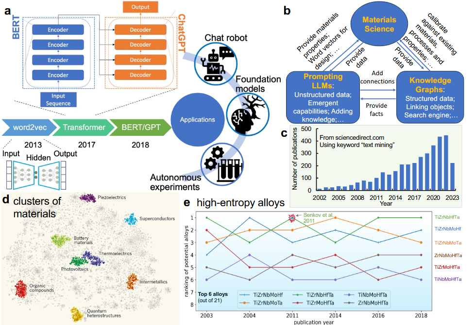
图1：自然语言处理的模型与应用
作为人工智能和机器学习的重要组成部分，NLP已在材料科学、分子生物学、生物医药、公共卫生、化学等众多领域得到应用（具体案例如下表所示）。
表1：自然语言处理在材料科学及其他研究领域的典型应用（部分示例）
| 研究主题 | 主要方法 | 应用描述 |
|---|---|---|
| 超高熵合金 | skip-gram | 发现用于新高熵合金设计的上下文相似元素 |
| 热电材料 | 发现现有材料的新应用 | |
| 锂离子电池 | 知识图谱 | 构建用于信息快速检索的问答模型 |
| 钙钛矿氧化物 | NER等 | 提取磁相变和超导相变信息 |
| 沸石 | 文本解析、回归模型 | 自动提取合成信息和趋势 |
| 固体氧化物燃料电池 | Transformer (BERT) | 命名实体识别、关系分类、摘要分类 |
| MOF | Tokenization | 发现结构-性质关系 |
| 生物化学 | Transformer | 多任务反应预测与解释 |
| 蛋白质结构 | 基于序列的蛋白质结构预测（如AlphaFold） | |
| 环境研究 | Transformer (ChatGPT) | 信息检索、简化工作流程等 |
注：NER指命名实体识别；MOF指金属有机框架。此表整合并简化了原文Table 1和Table 2的部分内容，旨在展示应用广度。
早期NLP方法如词嵌入模型（Word Embedding，例如skip-gram、GloVe），通过将词语和短语表示为高维向量，使得语义相似的词在向量空间中彼此靠近。近年来，拥有数十亿乃至更多参数、在数万亿级别数据上训练的大型语言模型（LLM），如OpenAI的GPT系列和Meta的Llama系列，在解决通用任务，如生成复杂计划、提出科学假说甚至创作诗歌方面，展现了惊人的能力。这一切的背后，Transformer架构的贡献功不可没。其核心的自注意力机制，使得模型能够同时处理整个输入序列，并根据上下文赋予不同部分以不同的权重，极大地提升了并行处理能力和训练效率。更重要的是，Transformer模型的能力遵循所谓的“标度律”（Scaling Law）——即随着模型参数量的增加，其性能（通常以损失函数值来衡量）会相应提升。
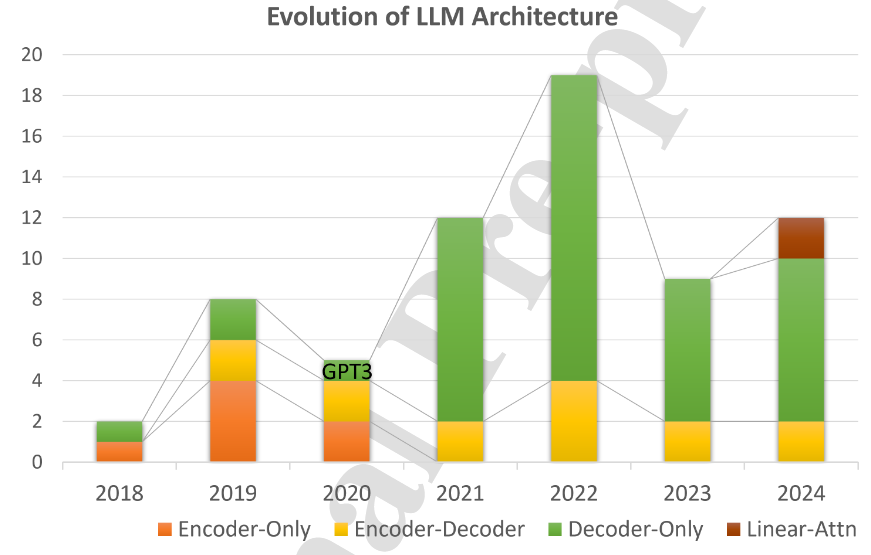
图2：大型语言模型（LLM）架构自2018年以来的发展趋势
尽管Transformer架构取得了巨大成功，但也面临挑战，例如训练所需计算资源随上下文长度二次方增长，以及逐个预测下一个词元（token）时注意力机制的非伸缩性和高能耗。为此，学术界也在探索如状态空间模型（SSM，例如Mamba）等新型架构，它们结合了Transformer和循环神经网络的优点，有望实现线性的计算和内存复杂度。
表2：代表性大型语言模型及其关键特性（截至论文提及日期）
| 模型 | 供应商 | 最新版本 (示例) | 关键特性 |
|---|---|---|---|
| ChatGPT | OpenAI | GPT-4.5 | 多模态（文本、图像）； 强推理与编程能力 |
| Llama | Meta | Llama-4 | 开源； 在微调方面表现强大 |
| Gemini | Gemini-2.5 | 长上下文支持； 强多模态推理 | |
| Claude | Anthropic | Claude-3.7 | 宪法AI确保安全； 强长文本摘要/记忆能力 |
| Deepseek | Deepseek AI | DeepSeek-V3 | 开源； 专为多模态和编程设计，性价比高 |
（注：此表基于原文Table 3简化，版本号可能为论文写作时的前瞻性描述或最新进展。）
“基石”已奠：浅谈NLP的基座模型与构建流程
随着Transformer架构的可扩展性得到验证，“基座模型”（Foundation Models）的新范式应运而生。其核心思想是先在海量（通常是未标记的）数据上通过自监督学习构建一个通用的、强大的预训练模型。这个“基座”模型能够从数据中捕获丰富的特征和普适性知识。随后，针对具体的下游应用（如特定材料的性质预测），仅需使用少量高质量的标记数据对基座模型进行微调，就能取得优异的性能，从而最大限度地发挥数据价值，并减少人工标注的负担。这一理念同样适用于科学文本。例如，一个在海量科学文献上训练的GPT模型，可以作为编码了广泛科学知识的基座模型，再针对合金结构分类等具体任务进行微调。
构建和应用语言模型通常涉及以下关键环节：
- 数据来源：包括科学出版物、预印本服务器（如arXiv）、开放获取资源（如Wikipedia）以及特定领域的专用语料库（如Matscholar NER数据集、材料合成程序MSP数据集等）。
- 工具与框架：如Scikit-Learn、TensorFlow、PyTorch、NLTK、Gensim等，以及用于加速大规模模型训练的DeepSpeed、Megatron等并行计算框架。
- 对齐（Alignment）：这是将预训练模型应用于特定任务的关键步骤，通常包括：
- 持续预训练：可选但有益，用领域特定数据进一步训练模型，以弥合通用知识与专业领域之间的差距。
- 指令集生成：创建高质量的“指令-响应”对（即问答对），用于指导模型。
- 微调：使用策划好的指令集在标记数据上训练模型，以增强其在特定下游任务上的性能。
- 偏好调整：通过真实应用场景中的反馈（如基于人类反馈的强化学习RLHF）来优化模型，使其响应更符合用户期望和实际需求。
表3：应用于科学领域的NLP模型示例（部分）
| 领域 | 架构 | 模型大小（参数） | 训练数据规模（示例） |
|---|---|---|---|
| 材料科学 | word2vec | ~1亿 | 360万篇摘要 |
| BERT | 1.1亿-3.4亿 | 15.3万篇全文 | |
| GPT | 17亿-67亿 | 2700万篇摘要与全文 | |
| 医学 | GPT | 27亿 | 3500万篇摘要与全文 (PubMedGPT) |
| 生物学 | GPT | 3.45亿-15亿 | 1500万篇标题与摘要 (bioGPT) |
| 气候科学 | ViT | 2.5亿 | PB级模拟数据 (ClimaX) |
（注：此表基于原文Table 4简化，ViT指视觉Transformer。模型大小和数据规模为论文引用时的近似值。）
直面“幻觉”：LLM的阿喀琉斯之踵与应对之道
尽管LLM能力强大，但“幻觉”——即模型生成看似合理却与事实不符的内容——是其在科学等严肃领域应用时面临的重大挑战。幻觉的来源复杂，可能与训练数据、训练过程或推理机制有关。针对幻觉的检测，主要分为事实性幻觉检测（判断内容是否符合事实）和忠实性幻觉检测（判断内容是否忠实于给定的上下文信息）。
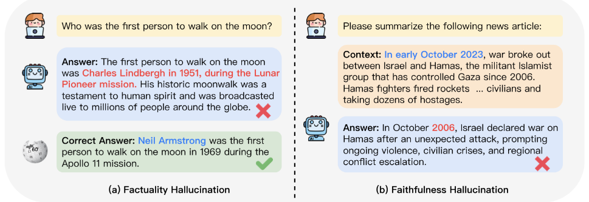
图3：LLM幻觉的一个示例
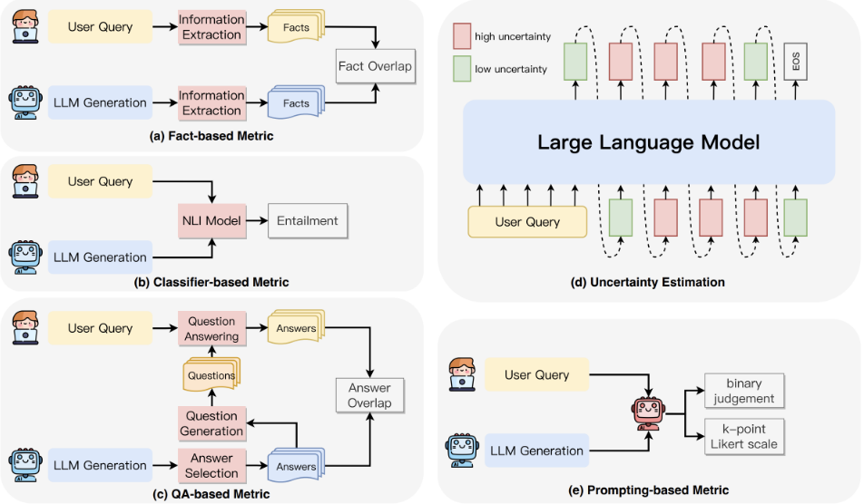
图4：忠实性幻觉的检测方法
减轻LLM幻觉需要综合施策，包括：提升训练数据质量（确保多样性、准确性、无偏见），采用正则化技术（如dropout、权重衰减、数据增强）防止过拟合，优化模型架构（如集成方法、改进注意力机制），以及实施后处理方法（如事实核查、来源验证、置信度评分）。当然，人类评估和反馈在优化模型、减少幻觉方面同样不可或缺。
检索增强生成（RAG）：为LLM注入“活水”
为了克服LLM知识的静态性、不完整性以及推理过程的不透明性，检索增强生成（RAG）技术应运而生。RAG的核心在于，在LLM生成回答前，先从外部可信数据库中检索相关信息，并将这些信息作为上下文提供给LLM，从而显著提升生成内容的准确性和可信度，尤其适用于知识密集型任务。RAG的发展也经历了从朴素RAG到高级RAG，再到更灵活的模块化RAG的演进。
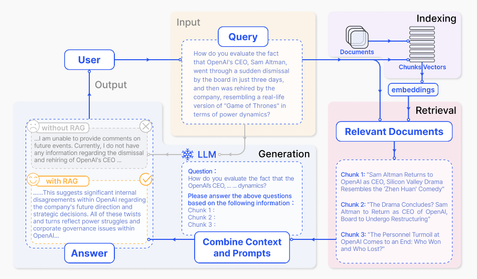
图5：RAG过程的一个代表性示例
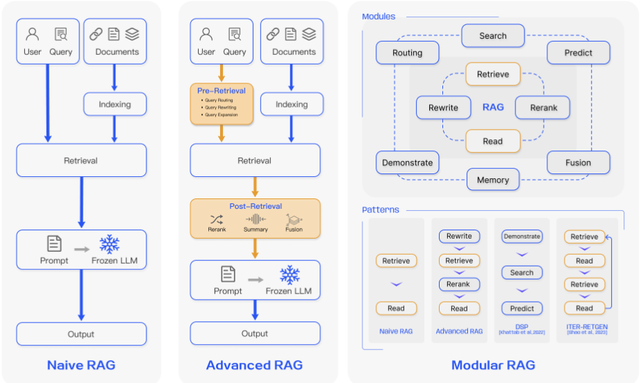
图6：三种RAG范式的比较
相较于模型微调（Fine-tuning, FT）和提示工程（Prompt Engineering），RAG在外部知识需求和模型适应需求方面有其独特定位。提示工程主要依赖模型固有能力，外部知识和模型调整需求低；微调则需大量针对性训练来调整模型参数；而RAG则像给模型配备了一本“定制教科书”，特别适合需要精确信息提取的任务。高级的模块化RAG甚至可以与微调技术相结合，进一步提升性能。
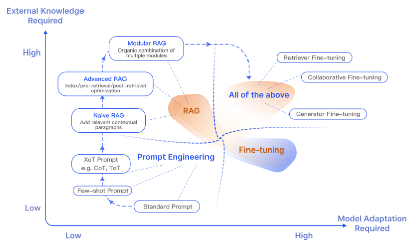
图7：RAG、提示工程和微调等优化方法的比较
自主智能体：LLM的“进化”形态
将LLM作为核心控制器构建自主智能体，是学术界和工业界一个引人入胜的研究方向。这些智能体远超简单的问答或文本生成，它们能够执行规划（将大任务分解为小目标，并进行自我批判和反思）、拥有记忆（短期和长期，常借助外部向量存储）、并能熟练使用工具（调用外部API访问最新信息、执行代码、连接专有数据库等）。
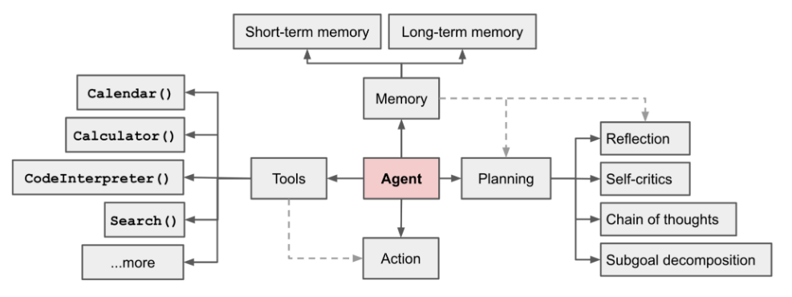
图8：一个由LLM驱动的自主智能体系统概览
构建理性的智能体架构是弥合传统LLM与自主智能体之间差距的关键。一个统一的框架可能包含：画像模块（定义智能体角色）、记忆模块（使其能从过去行为中学习）、规划模块（制定未来行动策略）以及行动模块（将决策转化为具体输出）。
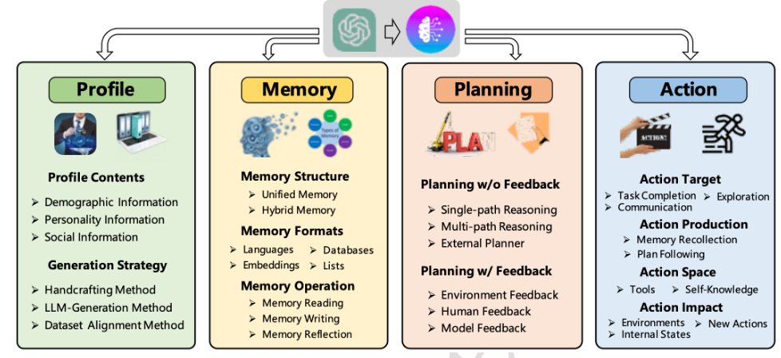
图9：基于LLM的自主智能体架构设计的统一框架
NLP与LLM在材料科学文本中的“用武之地”
语言模型正引领材料研究的范式转变。目前，NLP在材料科学文本中的应用可归纳为四大相互关联的核心功能（如图10所示）：信息提取、构建提示式语言模型、构建知识图谱模型以及为其他回归和分类模型提供信息/特征。
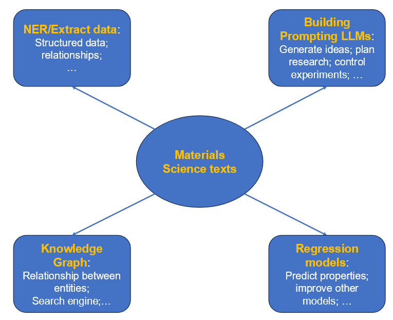
图10：自然语言处理与材料科学文本
- 信息提取：从非结构化的科学文献（如期刊论文）中提取结构化的材料属性、数据及其关联关系（如物性值及其测量条件、加工历史等）。LLM（如GPT-3、Llama-2）在经过微调或结合特定框架（如ChatExtract）后，已能高效、准确地从文本中提取复杂的科学知识和数据，其精度和效率可与甚至超越人工提取。
- 构建提示式语言模型：利用材料科学文本来训练或微调通用的基座模型，使其能够理解并响应材料科学家的特定提示。这些模型不仅能辅助生成新的研究思路、规划研究路径、验证方案（如检查材料是否已存在、研究是否已有报道），未来甚至可能作为控制中心操控实验设备，实现自动化实验。检索增强生成（RAG）技术，如LLaMP框架，通过从外部资源（如Materials Project数据库）检索信息，能够有效减轻LLM的幻觉，并蒸馏出高质量的材料知识。
- 构建知识图谱：利用材料科学文本构建知识图谱（KG）模型。KG以图结构化的方式连接实体（如合金、性质）及其关系，特别适合材料科学领域信息检索，能有效应对材料命名不统一、信息分散等问题。例如，alloyKG能够根据合金成分（不限排列顺序）检索相关文献。LLM（如GPT-4）也被用于增强和扩展针对特定应用（如增材制造中回收金属粉末）的知识图谱。
- 为其他模型提供信息/特征：将NLP处理过的文本信息（如词向量）或LLM的输出作为特征，用于训练传统的监督式机器学习模型（回归或分类）。例如，将材料的加工历史等非结构化信息转化为词向量，可以提升模型预测材料性能的准确性。微调后的LLM（如GPT-3）甚至可以直接用于预测材料属性或进行分类任务，其性能有时能超越在小规模专业数据集上训练的传统机器学习模型，因为LLM基座模型本身已包含了大量有价值的先验知识。
<grid>
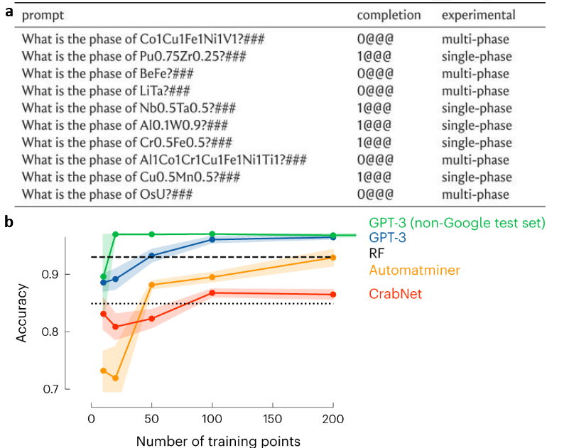
图11：微调GPT-3用于固溶体预测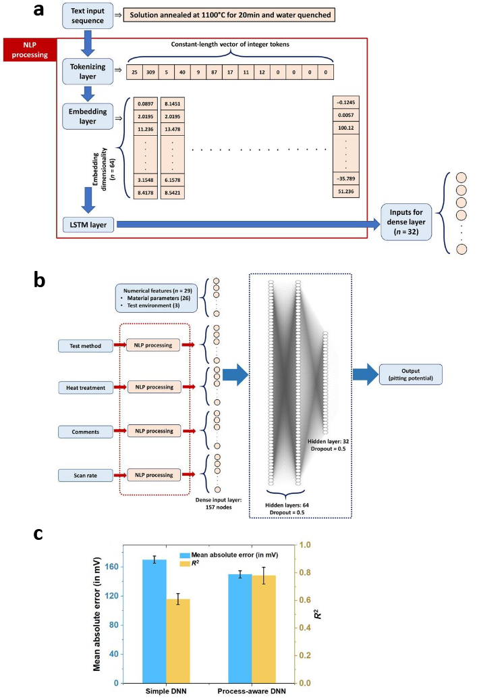
图17：深度神经网络的架构与性能</grid>
<grid>
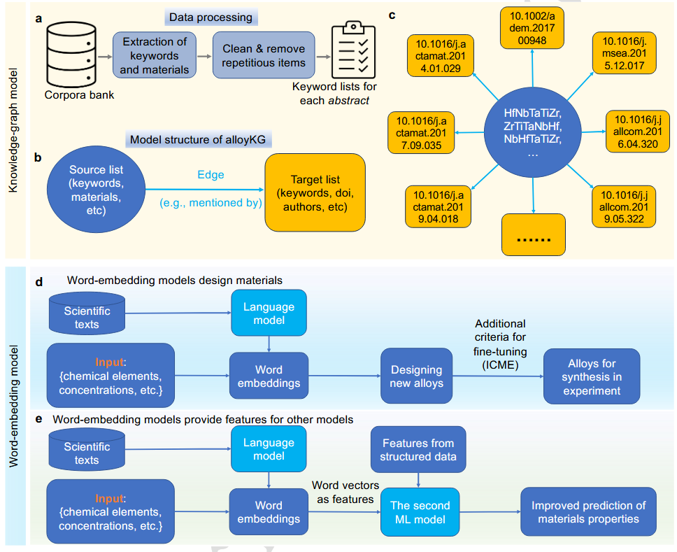
图18：知识图谱与词嵌入模型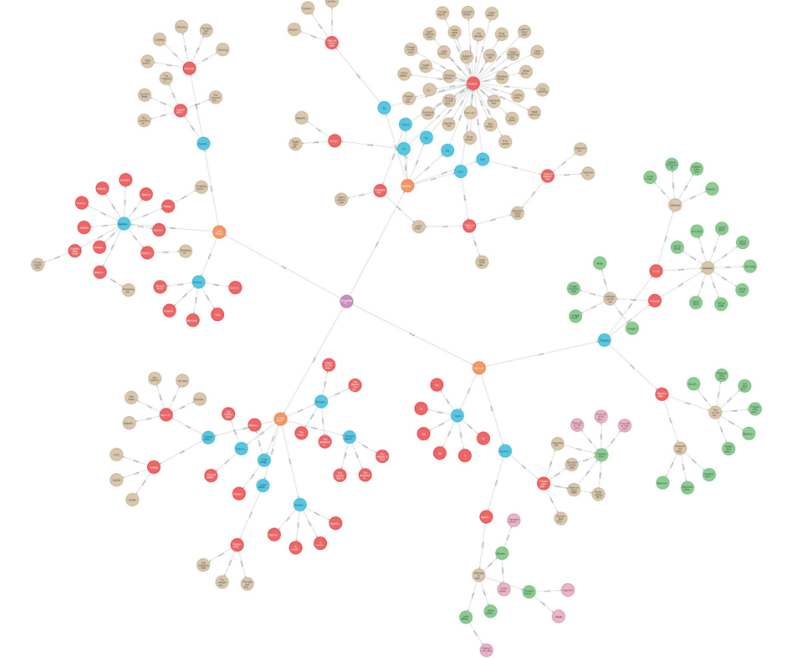
图19：由GPT-4增强的知识图谱</grid>
NLP赋能具体材料领域：从结构材料到可持续设计
- 结构材料（特别是金属材料）：NLP，尤其是词嵌入模型（如skip-gram），已成功用于识别现有材料的新应用（如发现新型热电材料，图12a-c），甚至辅助设计文献中未报道过的新型材料（如高熵合金，图12d-f, 1e）。LLM（如PDGPT，图13）在结合RAG和微调后，也能为特定合金体系（如镁合金）提供更可靠、准确的相图信息。
<grid>
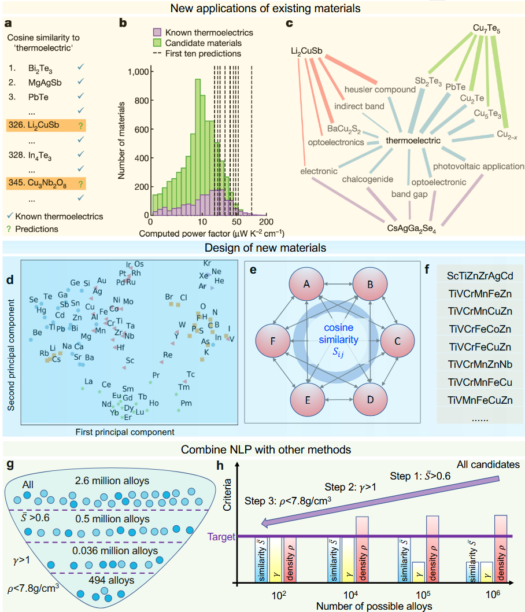
图12：基于自然语言处理的材料设计策略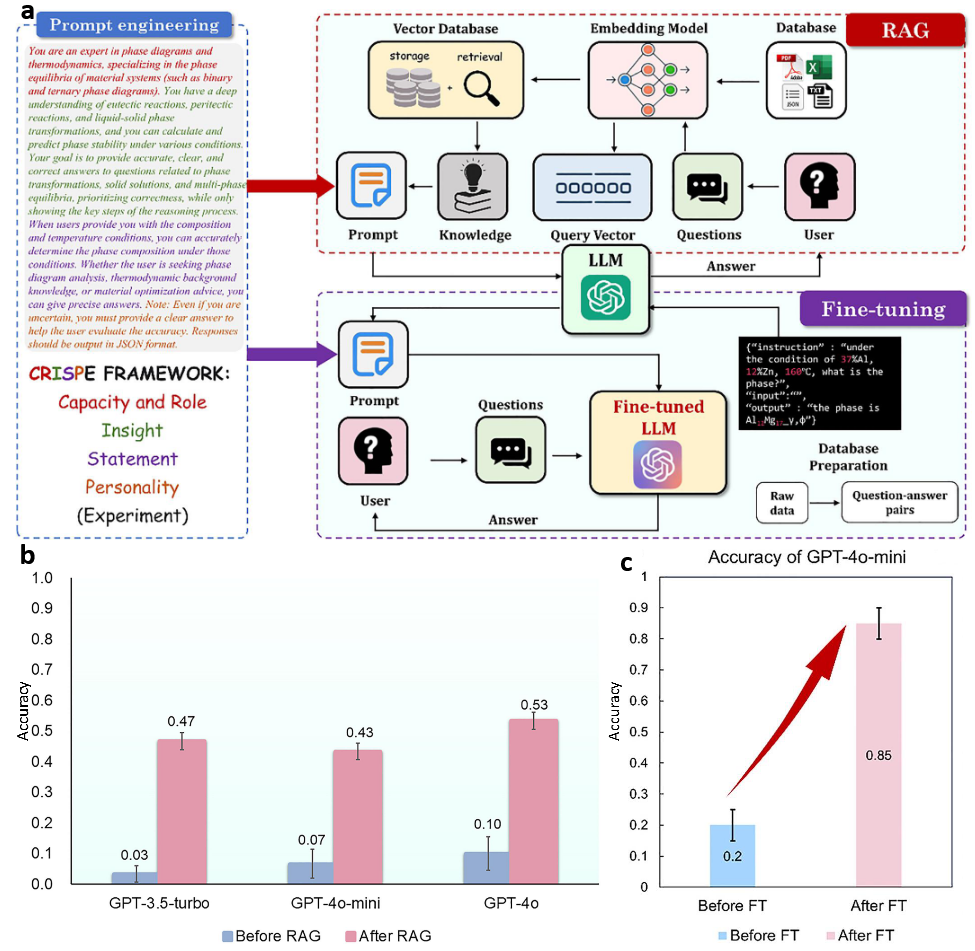
图13：一个针对镁合金的大型语言模型</grid>
- 其他无机与有机材料：NLP的应用同样广泛。例如，在无机材料领域，CrystaLLM（图14）等模型能够基于化学式生成晶体结构（CIF文件）。在有机材料，特别是生物大分子领域，AlphaFold系列模型（图15）基于Transformer架构，成功实现了从氨基酸序列预测蛋白质三维结构，极大地推动了药物发现等领域的发展。此外，LLM也被用于学习复杂分子的分布规律，以及从文献表格中提取结构化数据。
<grid>
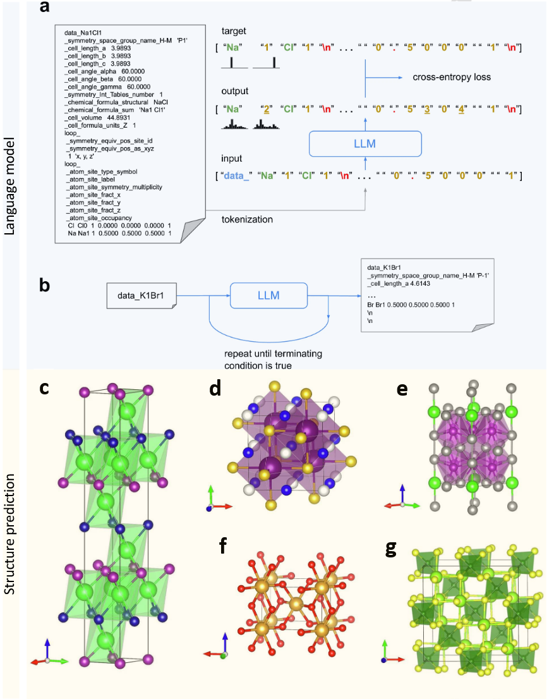
图14：无机材料的结构生成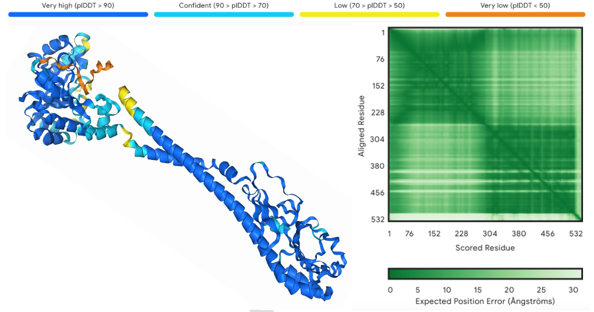
图15：由AlphaFold 3预测的蛋白质T1050的结构</grid>
- 增材制造（Additive Manufacturing, AM）：AM的可编程特性使其与NLP和语言模型天然契合。LLM不仅能用于AM相关的故障排除，更有潜力作为控制中心，将高级指令转化为3D打印机可执行的G代码。AMGPT等结合RAG的专用LLM在处理领域特定问题时表现优于通用模型。尽管LLM在直接生成和调试G代码方面仍有提升空间（如图16所示，不同LLM性能差异显著），但其在自动化AM流程、优化制造参数方面的潜力已初步显现。
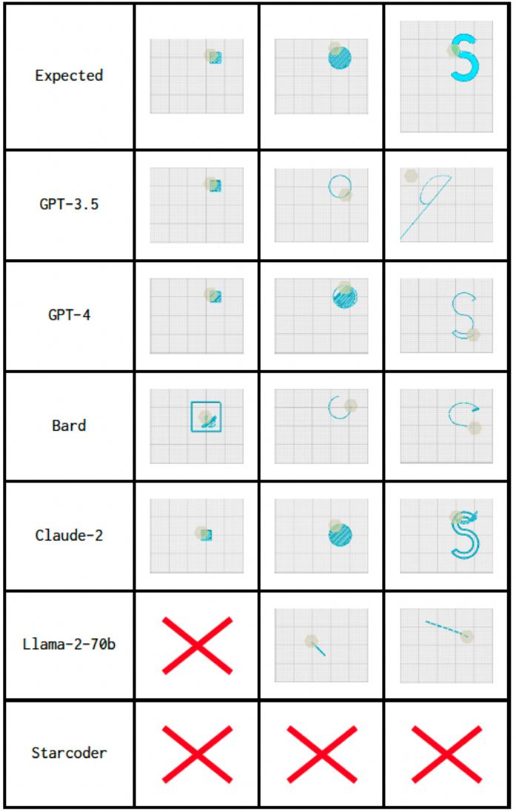
图16：六种大型语言模型生成G代码以控制增材制造的性能
- 材料的可持续性设计：这是当前材料科学面临的最紧迫任务之一。NLP技术能够从海量文献中提取与材料可持续性相关的宝贵信息（如回收率、生命周期、温室气体排放、能耗等），并将其融入材料设计流程。例如，通过结合“上下文相似性”方法（NLP筛选元素）与集成计算材料工程（ICME）方法（热力学、力学计算），可以加速设计具有特定可持续性指标（如轻量化以降低能耗）的新型合金（如论文图12d-h再次被引用）。LLM还有望加速ICME本身，例如生成模拟输入文件、训练替代模型、解决偏微分方程、自动化数据后处理等。通过训练关注可持续性语料的NLP模型，或将可持续性相关词向量作为特征输入下游机器学习模型，可以直接引导设计更环保的材料。
挑战与机遇：在语言模型的浪潮中稳舵前行
尽管前景广阔，但LLM在材料科学中的应用仍面临诸多挑战：
- 数据质量与可获取性：高质量、经同行评审的训练数据是根本。许多有价值的数据源（如付费期刊、专利、专业数据库）尚未被充分利用。推动开放获取、共享预印本（如arXiv）对整个社区至关重要。
- “幻觉”问题：LLM基于概率统计的本质使其难以完全避免幻觉。虽然RAG、知识图谱增强等方法可以缓解，但生成内容仍需仔细核查。
- 处理材料科学特有数据格式与科学细微差别：材料数据常包含复杂图表、数学符号，LLM需要准确理解科学术语、性质间关系以及实验和计算结果的细微差别。
- 模型更新与知识同步：材料科学知识日新月异，如何让LLM及时跟上每年数十万计的新文献和数据，是一个严峻挑战。
- 训练成本：训练大规模基座模型的计算和能源成本高昂，需要社区协作。
为此，模型蒸馏（用高性能“教师”LLM训练小巧的“学生”模型，如DistilBERT）和小型语言模型（SLM）（参数量在百万至数十亿级别，包括固有小型架构如skip-gram、句子Transformer，或LLM的压缩版本如Llama-3.1 8B）提供了更经济高效的途径，有望在满足特定任务需求的前提下，降低应用门槛。
展望未来：自动化材料发现与AI智能体
材料发现是一个涉及理论与实验的复杂迭代过程。NLP和LLM的终极潜力之一，在于构建自动化材料发现平台，其中LLM扮演AI智能体的角色，负责从需求定义、文献检索、候选材料提出（结合ICME计算）、实验设计与执行（未来甚至可能操控自动化实验设备）到结果分析的全流程。论文图21描绘了这样一个基于LLM的整体化、自动化合金设计愿景，LLM作为控制中心，根据符合社会、工业需求及联合国可持续发展目标的提示，驱动整个设计与制造流程。
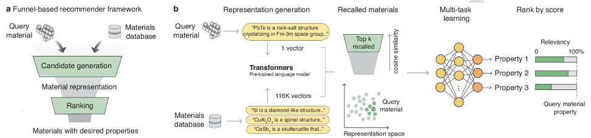
图20：基于词嵌入的材料推荐框架
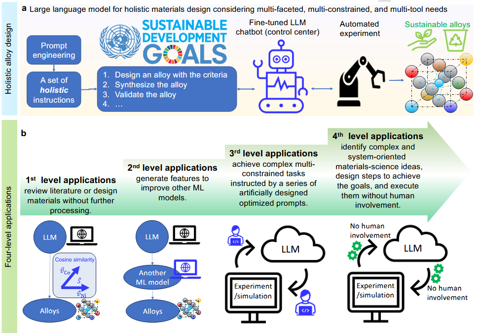
图21：基于LLM的整体化合金设计与自动化
特别是在建模与仿真领域，由于整个过程更均质且发生在统一的计算环境中，LLM作为全自动智能体的实现路径可能更为直接。
量子计算：语言模型的远方灯塔？
训练LLM的巨大计算开销，也促使人们展望更遥远的未来。量子计算（QPU）因其指数级加速潜力，被视为可能彻底改变LLM训练范式的一项技术。然而，这需要开发全新的量子算法，并依赖于高保真、容错量子硬件的成熟，目前仍处于探索的初级阶段。
结语：语言模型，重塑材料科学的“新引擎”
自然语言处理和大型语言模型无疑是当前计算科学和机器智能领域最富活力的前沿之一。它们正以前所未有的深度和广度渗透到材料科学研究的各个层面，从基础的文本信息处理，到复杂的材料设计、增材制造乃至可持续性评估。这篇综述系统地梳理了相关进展，清晰地指出了语言模型在处理材料科学文本、构建专用工具方面的巨大潜力，并坦诚地剖析了现存的挑战与未来的机遇。诚然，让AI在材料科学领域充分释放其潜能，道阻且长。但正如文中所揭示的，通过结合领域知识、巧妙设计应用框架（如RAG、知识图谱、提示工程、自主智能体），并积极探索更经济高效的模型构建策略（如模型蒸馏、小型语言模型），我们正稳步迈向一个由AI深度赋能的材料科学新时代。在这个时代，语言模型将不仅仅是信息检索的工具，更是启迪创新、加速发现、并助力我们构建一个更加可持续未来的强大“新引擎”。